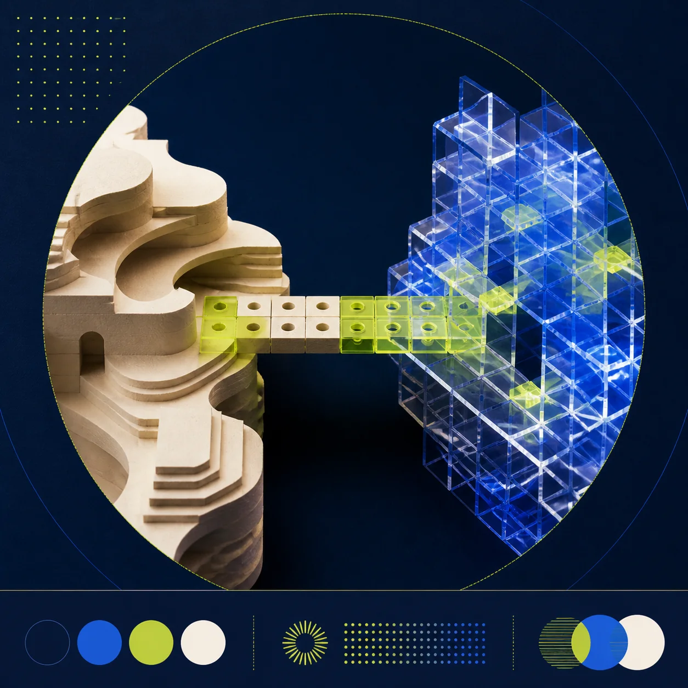

AGENT SKILL / VISUAL PROMPT COMPILERUPSTREAM d62d998
图片只是素材，
发布包才是结果。
上游 $punk-cover / $punk-avatar 负责把内容编成视觉；本研究新增 $punk-publish，把封面、正文、标签、Alt 文本和产物清单编排成可检查的发布草稿。
- 02+1
- 上游 Skills + 研究扩展
- 24
- 封面 / 海报风格
- 05
- 头像风格
- 08
- 实用场景演示
00
现实中怎么用：生成一套发布草稿
默认交付不再是一张孤立图片，而是一套可编辑、可复查的内容包。网页构造真实 Agent 指令，并用规则化样例展示执行后应该拿到什么。
STEP 0 · 两个能力来源先让 Agent 同时发现视觉 Skill 与发布 Skill上游仓库不包含 `$punk-publish`。两项都完成后，默认发布包指令才可真实运行。
请安装这个仓库里的全部 Skills：https://github.com/adrianpunk/Punk-Skill
请加载当前工作区的本地 Skill：studies/punk-skill/extensions/punk-publish/。确认可以调用 $punk-publish；如需生成视觉，再确认 $punk-cover 已安装。
RESEARCH EXTENSION / $punk-publish
执行完成后，你拿到的不是一张图
本研究新增，不是上游原生能力。 下方是小红书发布包的规则化演示：正文在图片外，封面内的精确标题由可靠文字层渲染。
01 / COPY
编辑发布文案
02 / VISUAL
无字底图 + 可靠文字层
AI × SOFTWARE DELIVERY
AI Agent 不是更快的按钮
从操作工具，到编排任务闭环
RESEARCH DRAFT
为什么分两层：模型生成气氛与构图，标题由 HTML / 设计工具确定性排版，避免错字；发布时再导出为最终 cover.png。
03 / PACKAGE
文件与追溯清单
manifest.json
网页展示的是预期目录；真实 Agent 只有在 Provider 返回文件后，才应把 artwork.png 和 cover.png 记为已存在。
04 / QA
发布前质量检查
这是结构与一致性检查，不替代事实核查、医学/法律审核或平台合规判断。
05 / EXPORT
导出真实发布包
浏览器会真正生成文件
用 Canvas 合成准确文字的 cover.png，保存当前研究底图、6 个文案文件、调用 brief、文字规范，并为每个实际字节计算 SHA-256 后写入 manifest。
导出仍是草稿，不会连接或写入小红书账号。真实 Agent 运行后，应以 Provider 返回的 artwork 和完整编译 Prompt 替换研究演示资产。
04 / PLATFORM PREVIEW
读者最终看到的是“封面 + 文案”
演示状态：草稿，尚未发布这条指令发出去以后，会发生什么？
- 01YOU → AGENT发送文章、渠道、比例和风格
如果漏掉平台或风格，Skill 会先提问，不会贸然生成。
- 02PUNK SKILL提炼标题、摘要、主体、受众、情绪和隐喻
读取一个风格的 META 与 STYLE，再融合进封面或头像蓝图。
- 03FILESYSTEM先保存完整 Prompt
- 04IMAGE PROVIDER用保存的 Prompt 生成一张图
Provider 才是“画家”；Punk Skill 是导演和说明书。
- 05YOU检查标题、裁切和语义，再发布或重生成
真正生产中应保留 Prompt、Provider、模型版本、成本和产物文件。
01
原理：内容如何变成视觉
真正可复用的不是某张图，而是把任务结构、风格知识和输出蓝图编译成完整生成指令的过程。
- 01理解内容
提取标题、摘要、主体、受众、情绪与隐喻。
LLM REASONING - 02路由风格
按输出类型和主题，从 META 目录推荐候选风格。
STYLE META - 03编译提示词
将一个 STYLE 原子融合进 Cover / Avatar 蓝图。
PROMPT BLUEPRINT - 04外部生成
保存 Prompt，再调用宿主提供的图像生成工具。
IMAGE PROVIDER
由 Agent 理解输入，不是关键词匹配。
定义何时用、输入类型和输出形状。
只提供构图、材质、色彩和图文关系。
不是尾部拼接；风格约束被融入封面或头像蓝图。
02
使用场景地图
先看任务要解决什么，再选输出比例和风格。风格不是审美贴纸，而是对信息目标的适配。
内容发布
把文章、线程或知识清单压缩成首图。
- 典型交付
- 公众号、小红书、X 头图
- 优先判断
- 标题钩子、平台比例、缩略图识别
商业沟通
让投资判断、产品集成和组织变化可视化。
- 典型交付
- 投资备忘录、发布横幅、咨询报告
- 优先判断
- 可信度、关系结构、品牌安全区
科研与教育
把机制、对象和关系转译成阅读入口。
- 典型交付
- 论文解读、医学科普、课程封面
- 优先判断
- 准确边界、对象关系、非奇观化
人物、宠物与文化 IP
提取可识别特征，形成头像、纪念卡或活动主视觉。
- 典型交付
- 宠物头像、城市展览、社交形象
- 优先判断
- 身份锚点、缩放识别、确定性文字层
03
八个实用场景演示
切换预设，观察任务为什么匹配某种风格，以及比例、语义字段、输出约束如何随交付物变化。
- 使用目标
- 为什么适合
- 适配动作
- 交付物
COMPILED PREVIEW
—
可靠文字层演示：图像底图无字，标题由网页精确渲染；这是本研究扩展，不是上游原生行为。
04
上游全部 29 个自带样例
24 个封面 / 海报风格与 5 个头像风格全部列出。每张图下方包含风格说明、适用场景和视觉语言。
没有匹配的风格，请换一个关键词。
查看上游全部 29 种风格与使用方式 ↗05
从风格库扩展为生产系统
以“人 × Agent 共创”播客封面为例，把一次性 Prompt 扩展成可复用的品牌视觉编译器。
STYLE ATOM内容 + 一个风格
→ 单张生成图
→ 单张生成图
- 自然语言风格约束
- 标题由图像模型尝试生成
- 每个平台独立重新描述

HUMAN × AGENT / S01 E01人 × Agent
共创时代RESEARCH PODCAST
共创时代RESEARCH PODCAST
- 结构化品牌令牌与安全区
- 无字底图 + 确定性文字层
- 从同一规格编译多平台变体
06
研究判断与下一步
目前适合研究 Prompt 工程和创意 Agent 工作流，不应被包装成新的图像生成算法。
工程实践价值
任务蓝图与风格原子分离，适合扩展为团队视觉知识库。
Agent / HCI 价值
确认门、风格推荐和结构化输出可以形成可测的人机协作流程。
算法创新
没有训练、推理或新模型；核心贡献属于 Prompt 与工作流设计。
单图 vs 完整发布包
已形成 5 类任务、30 个来源、A/B 配对的预注册草案；主要测量达到可审核草稿的时间、必需资产遗漏率、人工编辑量、OCR、语义和事实边界。协议尚未执行，不虚构实验结果。